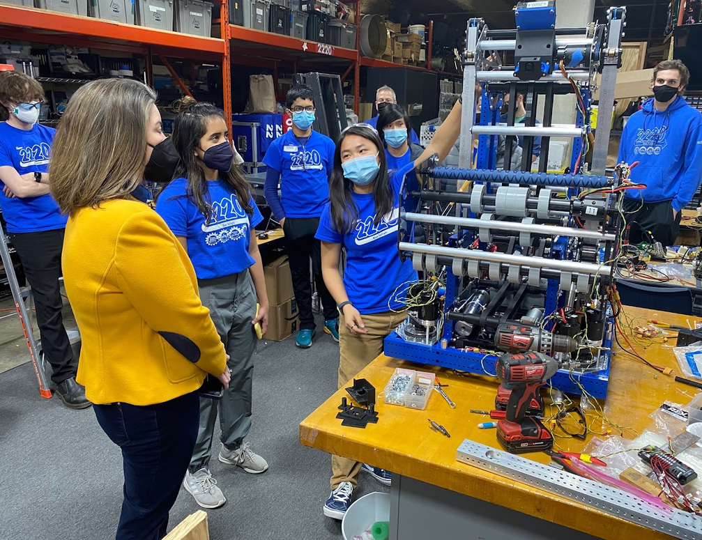
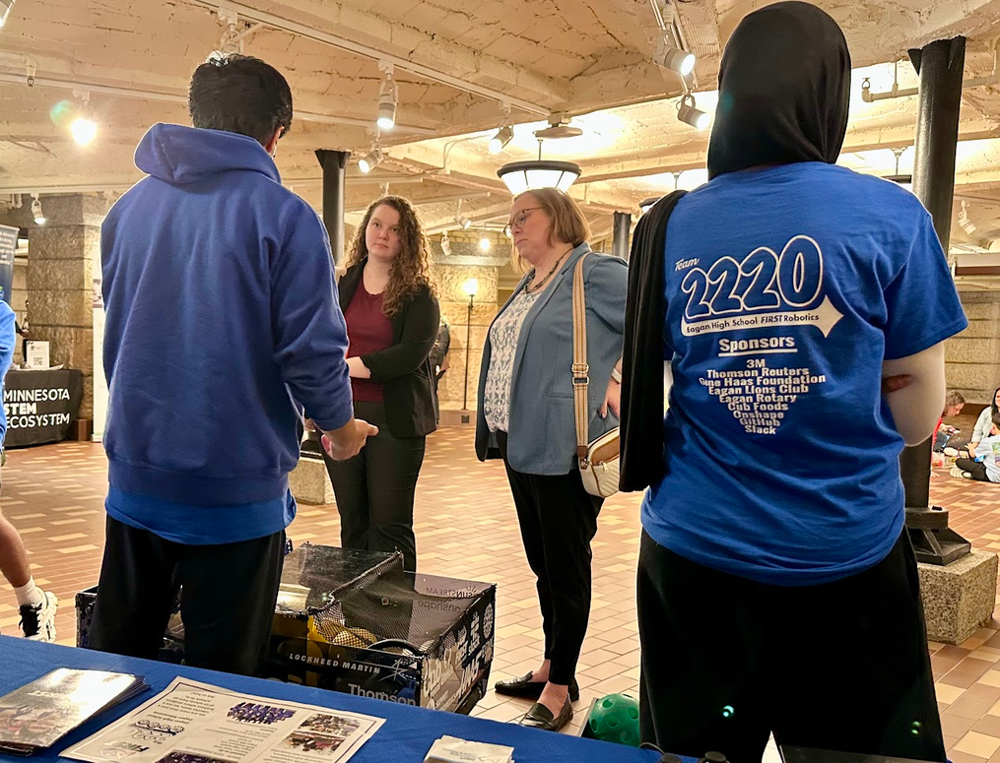
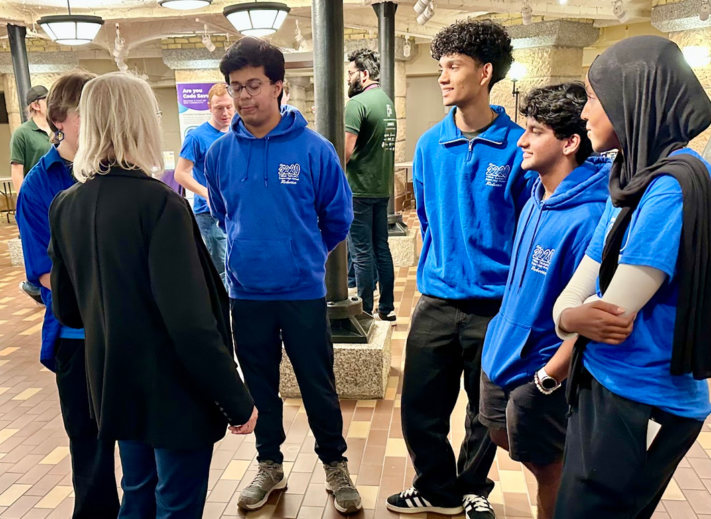
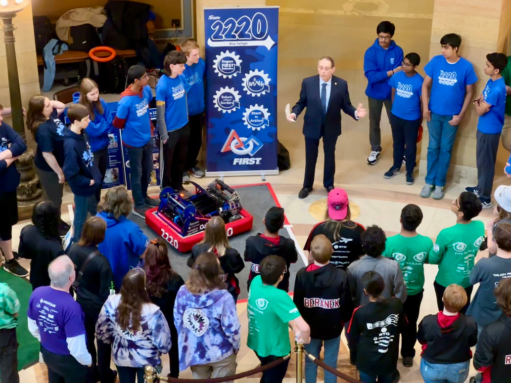
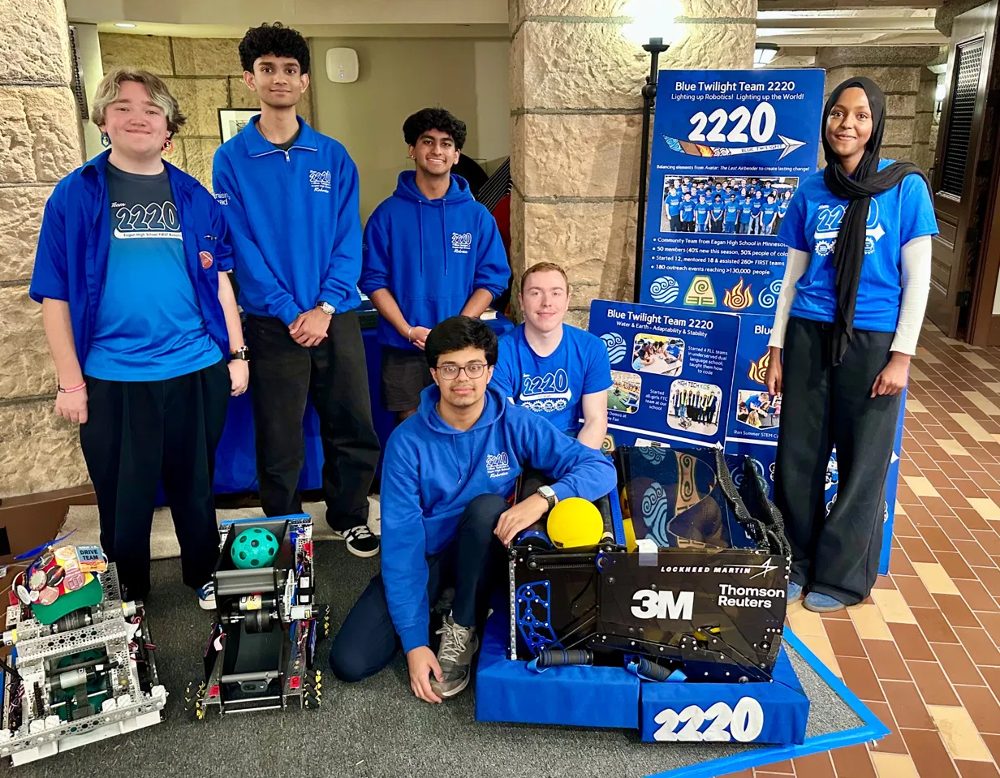
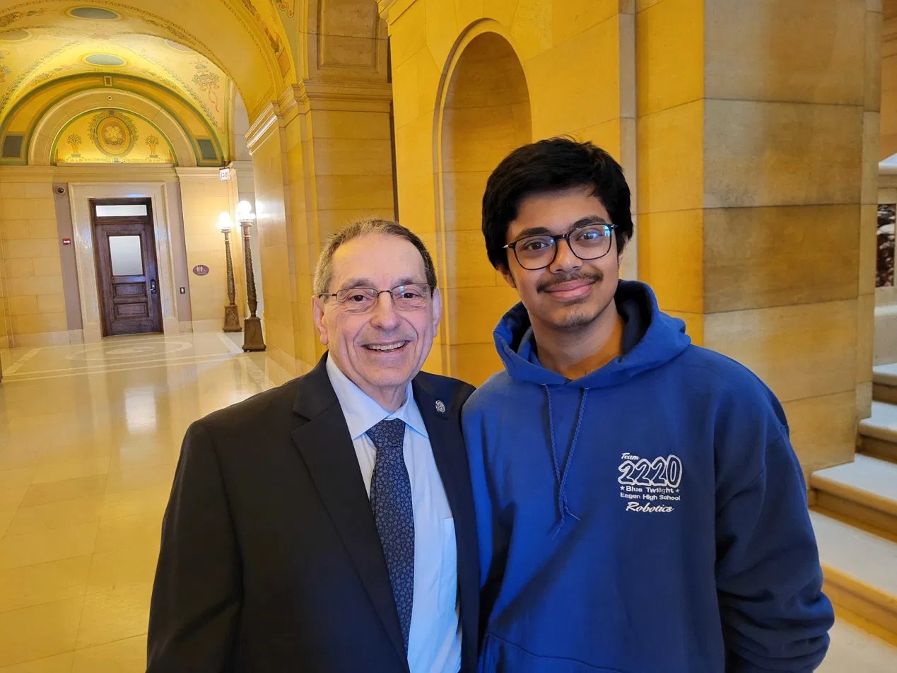
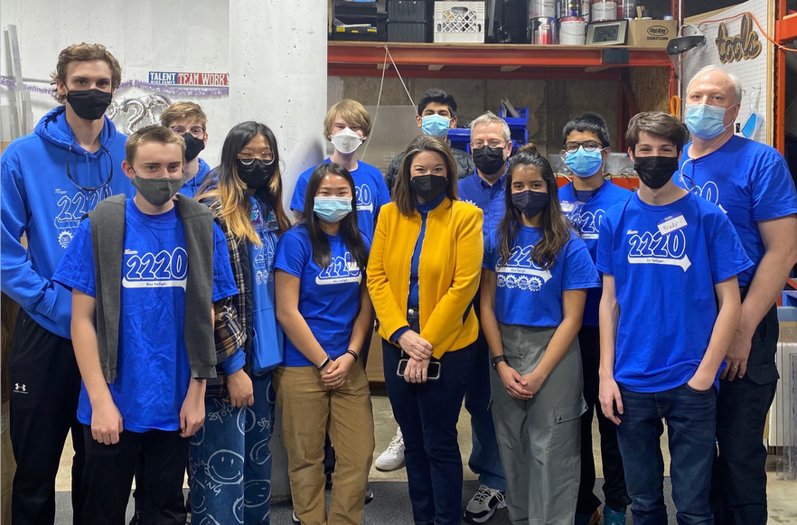
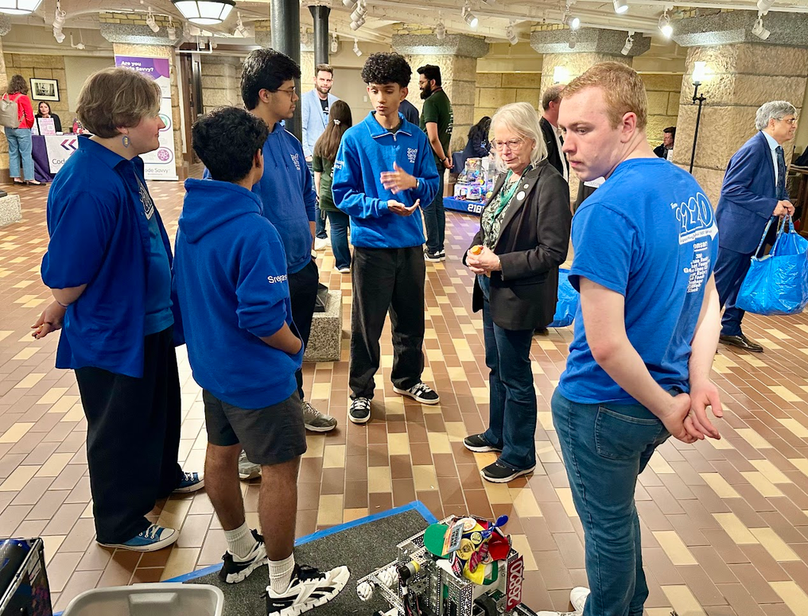
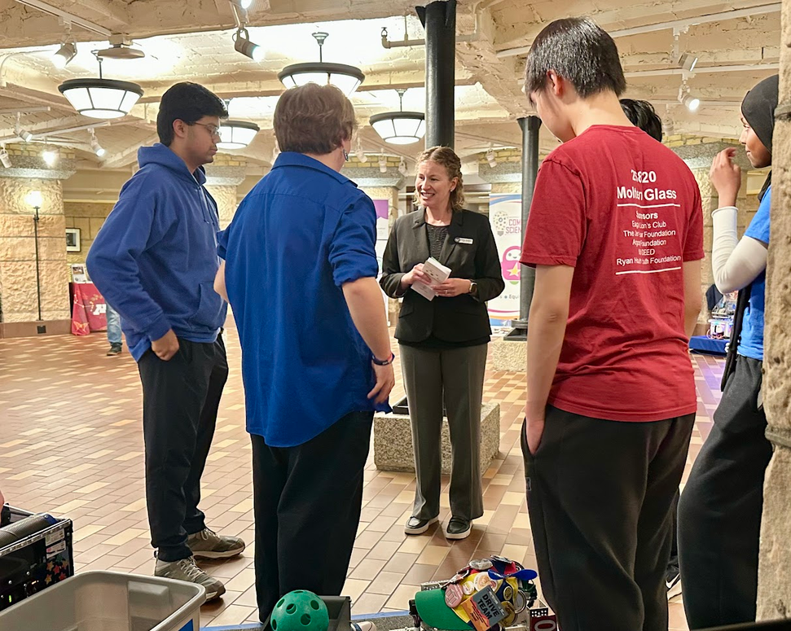

ADVOCACY · PUBLIC STEM
Grades 8, 9, and 11
Robotics Advocacy at the Minnesota State Capitol.
Student robotics advocate
I brought the robot into conversations at the Minnesota State Capitol and explained what robotics programs make possible for students.
Scenes from
the process.
From preparing the robot and team materials to sharing student-built robotics with lawmakers and visitors at the Capitol.









What the work
looked like.
Over three years, I demonstrated our team’s robotics work to lawmakers for a total of 13 hours. Showing a working machine made it easier to talk about the people, tools, coaching, and competition access needed to sustain a robotics program.
My advocacy contributed to state-level FIRST support: more than $1.2 million in coach stipends, a $119 million bond for FIRST event centers, and $2.4 million for STEM workforce development. These are statewide outcomes; my part was helping decision-makers see the student experience behind them.
Top skills utilized
- Legislative advocacy
- Public speaking
- STEM outreach
- Policy communication